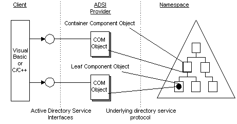

title: Active Directory Service Interfaces Provider description: An ADSI provider contains the implementation of ADSI objects and dependent objects for a particular namespace. ms.assetid: fb4b9807-7f76-4497-96be-77924bac8f30 ms.tgt_platform: multiple keywords:
An ADSI provider contains the implementation of ADSI objects and dependent objects for a particular namespace. The following illustration shows that clients are concerned only with getting and using interfaces on an object, and not with the details of where and how the software of an object is implemented.

Â
Â